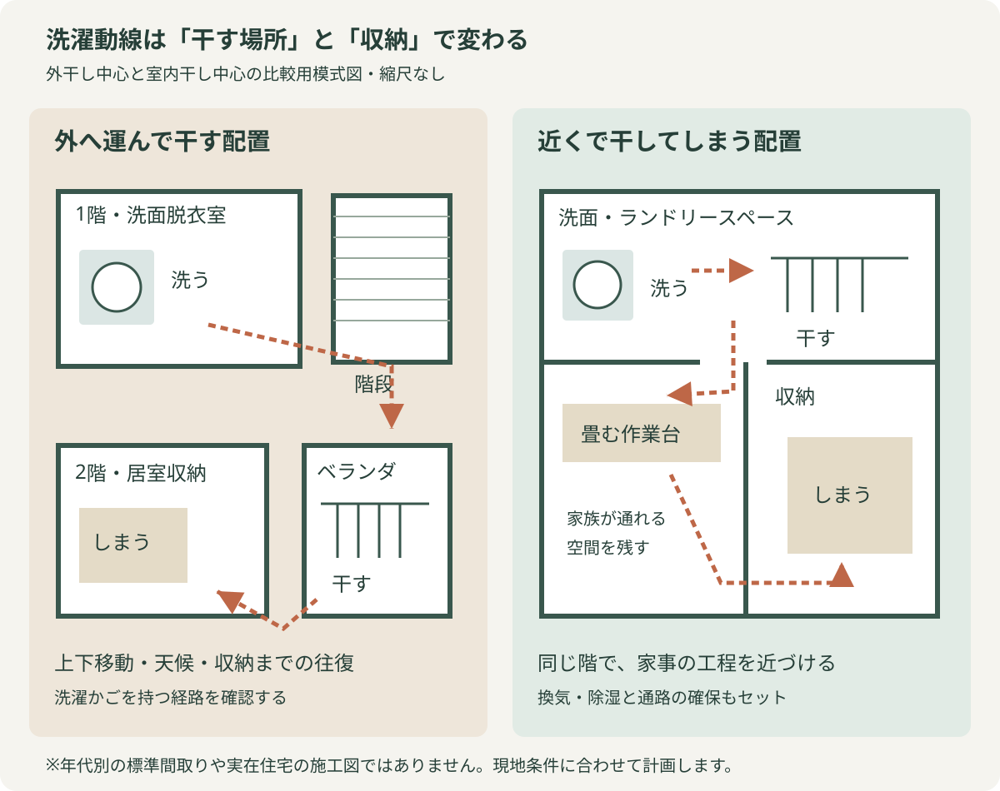
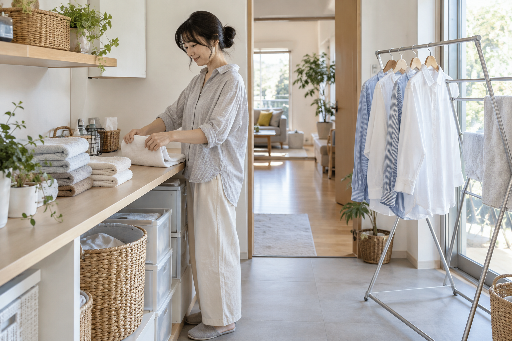

私が使った洗濯機では、ドラム式は乾燥まで任せていましたが、縦型は仕上がりのシワが気になり、コインランドリーを使うこともあります。乾燥機能があっても、洗濯の方法は一つには決まりません。
困るのは、干すために何度も家の中を往復したり、リビングが洗濯物で埋まったりすることです。家電や道具の使い分けに加え、干す場所と設備、しまう場所を一緒に考えてみます。
乾燥機の使い分けから、浴室暖房乾燥機・室内物干し金物・換気と収納まで。身近な道具も試しながら、洗濯物を運ぶ負担を減らす間取りを図で考えます。
公開日：未定
室内干し・洗濯動線 文｜エイスケ（住宅と教育の専門家）
文｜エイスケ（住宅と教育の専門家）
私が使った洗濯機では、ドラム式は乾燥まで任せていましたが、縦型は仕上がりのシワが気になり、コインランドリーを使うこともあります。乾燥機能があっても、洗濯の方法は一つには決まりません。
困るのは、干すために何度も家の中を往復したり、リビングが洗濯物で埋まったりすることです。家電や道具の使い分けに加え、干す場所と設備、しまう場所を一緒に考えてみます。
内閣府の2026年3月の消費動向調査では、二人以上の世帯における「洗濯機一体型」の衣類乾燥機の普及率は40.8％です。普及率は、その製品を所有している世帯の割合で、乾燥機能を使う頻度を示す数字ではありません。身近になった乾燥機ですが、衣類や使い方によっては、室内干しも必要になります。
夜の洗濯や花粉対策など、室内で干したい場面があります。室内干しをする理由はさまざまです。衣類と生活時間に合わせて、乾燥機や外干しと使い分けていきましょう。
道具を選ぶ前に「何に特に困っているか」を一つ決めてみてください。シーツが場所を取るのか、壁際でハンガーが傾くのか。困りごとが具体的になると、試したい道具も絞れます。
| 候補 | 試したい困りごと | 確認する条件 |
|---|---|---|
| スパイラル型のハンガー | シーツなどの大きな布を省スペースで干したい | 耐荷重、干す高さ、布の重なり |
| 壁際で使いやすい形のハンガー | 壁際の空間を使いたい | 設置場所、掛け方、壁や衣類の接触 |
| バスタオル用の伸縮ハンガー | タオルを広げて干したい | 広げた幅と、隣の洗濯物との間隔 |
| 窓枠などに取り付ける室内物干し | 対応する窓まわりに干す場所を増やしたい | 取り付け先の形・強度、専用品の適合条件と耐荷重 |
| 折りたたみ式の室内物干しスタンド | 使う時だけ干し場所を追加したい | 広げたときの寸法、安定性、収納場所 |
購入前に、置きたい場所の幅と高さを測っておきましょう。取り付けるタイプは、商品説明で枠の形や厚さ、耐荷重を確かめます。
SNSで見かけた道具も、使う場面を想像するきっかけになります。「わが家ならどこに掛けるか」を考えながら、商品の説明と照らし合わせてみましょう。
干した状態でも通れるか、使わない時にどこへ片づけるか。そこまで考えると、道具が増えてかえって部屋を狭くすることも防げます。
居室を洗濯物でふさぎたくないなら、浴室暖房乾燥機を使う方法があります。衣類乾燥に対応する機器を選び、取説に従って干せる量と位置を決めます。入浴前に取り込める時間帯に運転するなど、家族の生活とも合わせます。
後付けや交換を考える時は、浴室の構造、電源やダクト、取付寸法を確認します。天井に室内物干し金物を付ける場合も、下地と耐荷重、竿の高さ、洗濯物を掛けた時の通路幅が大切です。取り付けられる位置と換気設備は、施工店で一緒に見てもらうと計画がまとまります。
風を当てるだけでは、部屋の湿気は外へ出ません。換気や除湿を組み合わせ、フィルターも取説に沿って手入れします。ナビの浴室・洗面の設備情報から、自宅に合う候補を探せます。
一階で洗い、二階のベランダへ運び、取り込んで別の部屋にしまう。この往復を減らす方法が、洗濯機、干し場、作業台、収納を近づける計画です。二つの配置を図で比べてみましょう。

洗う・干す・しまう場所の違いを比べる模式図。自宅での移動を思い浮かべながら見てみましょう。
例えば、洗面脱衣室の隣に干し場を設け、その横にたたむカウンターと収納を置く。洗ってからしまうまでを近い場所で済ませる配置です。自宅ではどの移動を短くできそうか、今の間取りと比べてみてください。

洗濯かごを持って移動する回数を、一度数えてみましょう。乾いた服をリビングに仮置きしてから収納へ運んでいるなら、しまう場所を近づけるだけでも段取りが変わります。
| 段階 | 具体例 | 工事前に確認 |
|---|---|---|
| 家具・道具 | 収納を近くへ移す、物干しを使う時だけ出す | 通路、転倒、湿った衣類との接触 |
| 小さな改修 | 室内物干し金物、作業台、収納棚 | 下地、耐荷重、換気、家族の身長 |
| 設備の導入 | 乾燥機、浴室乾燥、除湿の計画 | 電源・排気・排水・ガス等、搬入、音、維持費 |
| 間取りの変更 | 洗面脱衣と干し場、収納を近づける | 構造、配管、入浴時のプライバシー、規約 |
干した状態の通路幅や、収納までの距離を確かめます。こうした使い方を先に決め、必要な広さや設備を考えていきましょう。
住宅の工夫として私が注目したいのは、乾く速さだけでなく、洗った後に何度運ぶかです。家の中の往復が負担なら、収納の位置を変えることにも意味があります。
夜はリビングでくつろぎたい。その希望から干す場所を見直してよいと思います。洗濯のために暮らし全体を合わせるのではなく、自分たちの時間に合う家へ近づけたいですね。
乾燥機能を持っていても、衣類や仕上がりの好みに合わせて干すことはあります。タオルは乾燥機、形を保ちたい服は室内干しなど、使い分けると便利です。
浴室の機器に衣類乾燥機能があれば、取扱説明書で干せる量や位置を確認して使ってみましょう。
衣類から出た水分を換気や除湿で処理することも必要です。
寸法、耐荷重、取り付け条件、片づけ場所を先に確認します。
下地、荷重、通路、換気などの条件を施工店へ確認してください。
必要な換気を一律に止めるのではなく、換気設備の取説に沿ってフィルターや給気口を手入れします。部屋干しの湿気対策と合わせ、設備に合った使い方を確認してください。
この記事を書いた人｜エイスケ
1986年生まれ。実家の工務店・不動産に10年間従事したのち、教育の世界へ。住宅と教育、両方の視点から「豊かな暮らし」をテーマに執筆します。